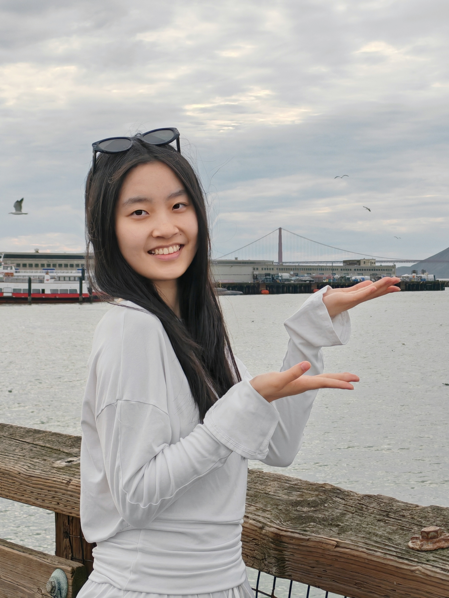
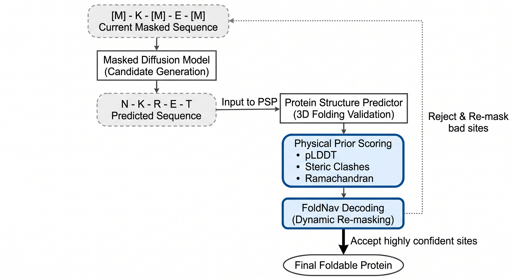
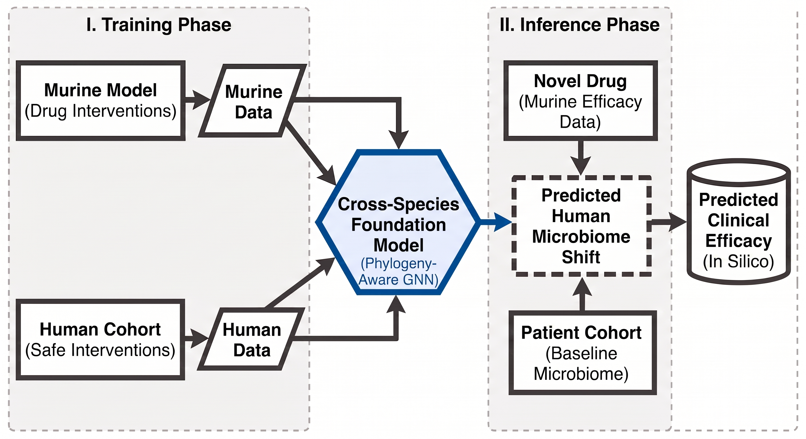
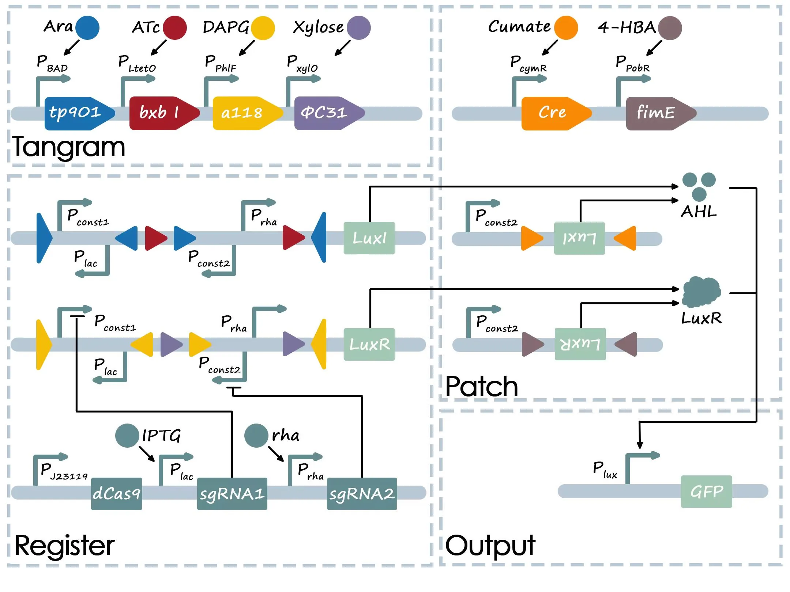
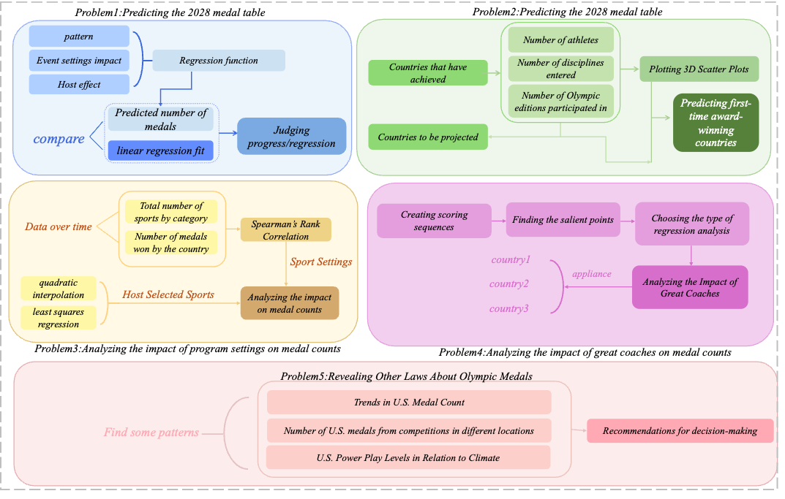
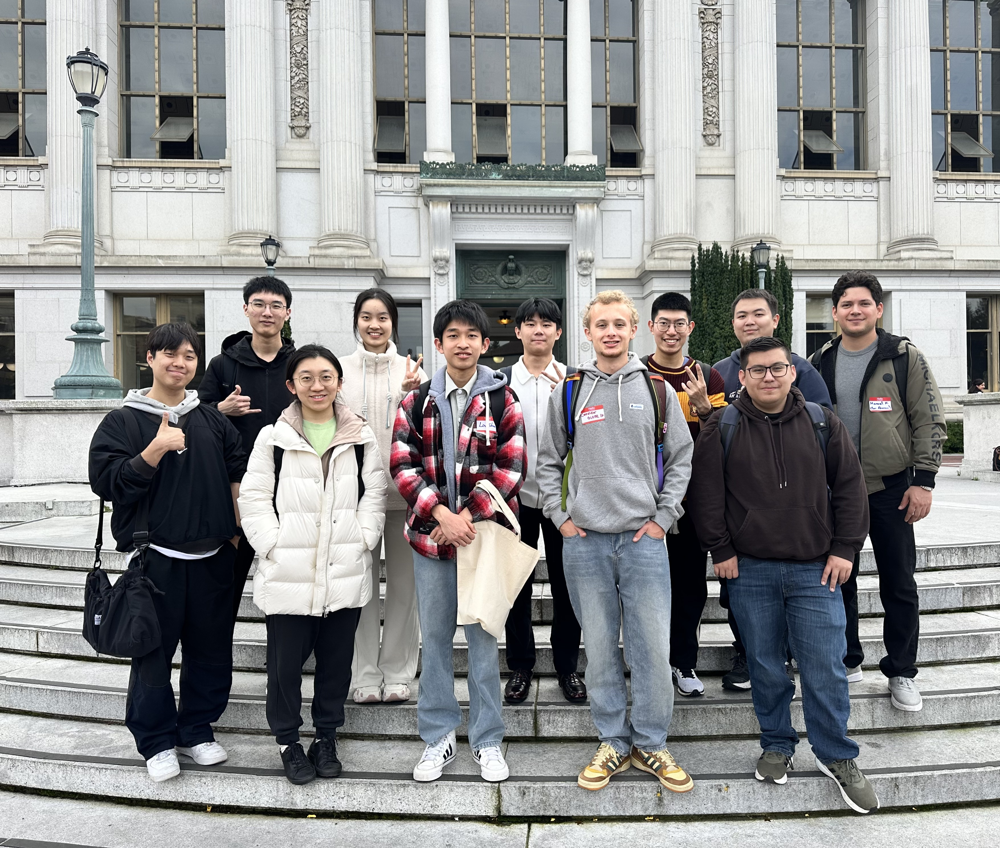
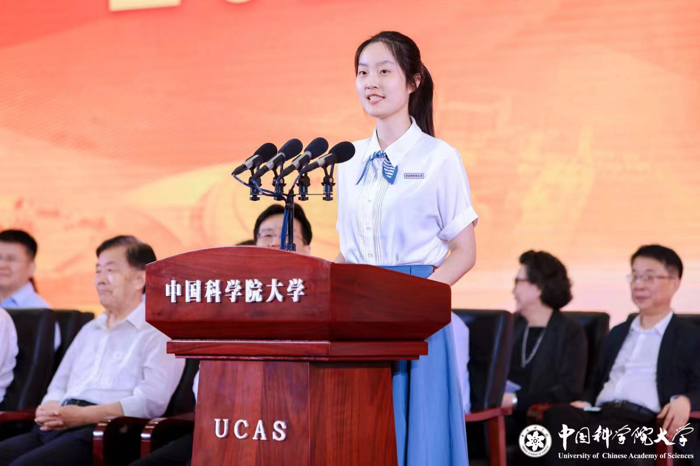

Actively seeking Ph.D. opportunities for Fall 2027 in CS & AI for Science.
01

About Me
I am a senior Artificial Intelligence major at the University of Chinese Academy of Sciences (Expected Jun 2027) and previously a visiting student in Data Science at UC Berkeley. My research is driven by one core question: How can we design principled machine learning models that truly master complex, real-world systems? I focus on advancing core computer science—specifically sequence modeling, NLP, and representation learning—to build scalable algorithms with robust generalization. Building on these computational foundations, I bridge methodology with domain knowledge to push the boundaries of AI for Science, developing biology-informed methods to understand and engineer complex biophysical and multi-omics systems.
Publications
Wang, L., Liu, Z., Tang, X., Chen, X.et al. FoldNav: Protein Structure Prediction as a Navigator for Masked Diffusion Protein Design. Nat Mach Intell (Under Review).
Honors & Awards
Honorable Mention (Top 15%) — Mathematical Contest in Modeling (MCM), COMAP May 2025
Silver Award — International Genetically Engineered Machine Competition (iGEM) Oct 2024
Cryo-EM image processing suffers from extremely low signal-to-noise ratios (SNR), where 2D Template Matching (2DTM) frequently generates "fuzzy particles" that introduce high false-positive rates during particle picking.
Methodology
Developing a novel denoising and filtering framework that integrates domain-specific physical priors (e.g., angular consistency and defocus properties) with deep learning models. The goal is to enhance structural signals, lower false positives, and improve candidate selection for downstream 3D reconstruction.
Current Progress
Formulated the noise reduction framework and established data preprocessing pipelines with physical thresholding. Evaluating and benchmarking multiple denoising paradigms (e.g., self-supervised learning and diffusion models) under physical constraints to identify the optimal approach.
Institute of Automation, Chinese Academy of Sciences Jul 2026
Protein Design via Structural Navigation

Motivation
Masked diffusion models struggle to guarantee real-time structural stability during protein design, often resulting in spatial clashes or motif collapse.
Methodology
Developed "Folding-Navigated Decoding", a training-free framework utilizing Protein Structure Predictors (PSPs) as active navigators, entirely executed independently on local institute computing resources. Implemented periodic structural confidence injection and rejection sampling based on pLDDT, steric clashes, and stereochemical priors. Designed a dynamic re-masking strategy targeting low-confidence non-motif sites to adaptively mitigate negative structural feedback.
Outcomes
Achieved 44.97% relative improvement in geometric quality, 3.56% in unconditional design foldability, and 18.18% in motif scaffolding pass rate.
Publication
FoldNav: Protein Structure Prediction as a Navigator for Masked Diffusion Protein Design — Co-author, Under Review at Nature Machine Intelligence.
UCAS–SJTU Joint Research Exchange Jul 2025 – Aug 2025
Analysis of Gut Microbiota Homeostasis Using Large Static Models

Motivation
Significant cross-species differences in gut microbiota hinder the direct transfer of drug efficacy evaluation models from murine subjects to humans.
Methodology
Migrated the PopPhy-CNN framework from TensorFlow to PyTorch, decoupling data loading and tree-graph convolution operations. Applied Graph Neural Networks (GNNs) to extract evolutionary topology features.
Outcomes
Validated that GNNs effectively bridge the species gap, enabling accurate cross-species drug efficacy prediction based on microbiota dynamics.
Programmable Logic Framework Based on CRISPRi (iGEM) [Silver Award]

Engineered programmable Boolean logic gates in E. coli using CRISPR interference (CRISPRi) and recombinase systems, validating 16 logic mappings for biomarker detection. Developed NLP-based circuit visualization tools and mathematical models to assess promoter stability.
Prediction of Medal Outcomes for the Olympic Games (COMAP) [Honorable Mention]

Built an AFMP multivariate regression model to predict medal counts for 77 countries (accuracy >60%). Applied 3D K-means clustering to analyze national performance trends and conducted Monte Carlo sensitivity analysis, verifying a 23.5% increase in host-country medal counts.
Biological Interpretability in NIPT Modeling (CSIAM)
Prioritized clinical physiological interpretability in cffDNA concentration modeling. Selected Generalized Additive Models (GAM, R²=0.2176) over Random Forest, as GAM successfully captured stable physical trends and marginal effects consistent with clinical physiology (validated via 1000 Bootstrap pseudo-samplings).
Continual Learning in Cognitive Tasks
Addressed the plasticity-stability dilemma by building a Memory-Augmented neural network. Integrated EWC and HAT algorithms to simulate synaptic consolidation and brain region specialization, successfully elevating accuracy on sequential cognitive reasoning tasks from 52% to over 76% without catastrophic forgetting.
M1 Motor Cortex Neural Signal Decoding
Designed a band-pass filtering and wavelet denoising pipeline for multi-channel array electrode signals. Built Kalman filter and LSTM-based decoders to predict real-time 3D motion trajectories (R²=0.84) with system latency under 15ms.
sEMG-based Hand Gesture Recognition System
Utilized Delsys high-precision biosensors to collect multi-channel sEMG signals. Engineered a robust feature space across time and frequency domains (MAV, RMS, MNP) to combat muscle fatigue drift. Deployed a Hard Voting ensemble classifier (Random Forest, SVM, XGBoost), increasing gesture recognition accuracy from 57% to 87.5%.
03
Leadership & Life
Beyond algorithms and wet labs, I am a competitive memory athlete, an active community builder, and an art enthusiast. Here is a glimpse into my life outside of research.


Competitions & Early Aptitude
US Memory Master (2025) & UK Memory Master (2024): Deeply passionate about competitive memory sports. The rigorous training in cognitive retention and pattern recognition has profoundly shaped my approach to data structuring and algorithmic logic.
National High School Biology Olympiad: Awarded National 2nd Prize & Provincial 1st Prize. This early intensive exposure to biological systems sparked my lasting interest in Biophysics and laid the foundation for my current AI4S research.
Student Leadership
Media Operations Team, UCAS Journalist Troupe (2024 - 2026): Served for two years in media operations, bridging campus news with the student community. Awarded the highest "Grade A" evaluation for exceptional performance.
Vice Minister, Life and Culture Dept. UCAS Student Union (2024 - 2025): Coordinated campus cultural events and student life initiatives, focusing on improving the daily well-being of the academic community.
Class Monitor, Class 2304 (2023 - 2024): Led a class of exceptional students during our freshman year, fostering a collaborative and supportive academic environment.
Arts & Hobbies
Piano (Level 10) & Latin Dance (Gold Star Level 1): I find balance and creativity through music and dance. Achieving Piano Level 10 and Latin Dance Gold Star Level 1 taught me discipline, rhythm, and the importance of continuous practice.
04
Contact
Feel free to reach out for academic discussions or Ph.D. opportunities.